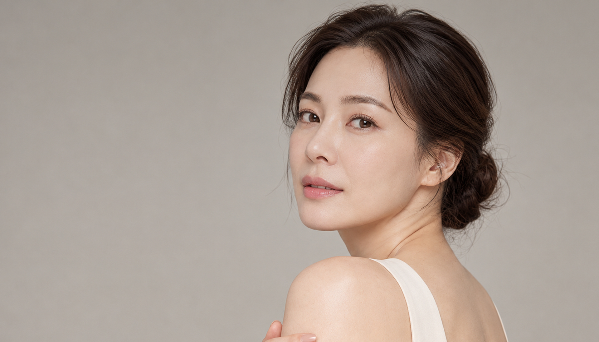
1968 년부터 이어 온 임상 전통 위에,
근육과 움직임을 정밀하게 관찰하는
해부학적 시선을 더하다
한방 미용의 시작, 제일한의원입니다.
The First Clinic of Korean Medicine
통증 치료에서 다져 온 근육·근막에 대한 이해로 얼굴을 보고,
오랜 처방의 한약으로 몸 안에서부터 관리합니다.
The First Clinic of Korean Medicine
SINCE 1968
제일한의원은 1968 년부터 이어 온 임상 전통 위에,
근육과 움직임을 정밀하게 관찰하는 해부학적 시선을 더하여 진료합니다.
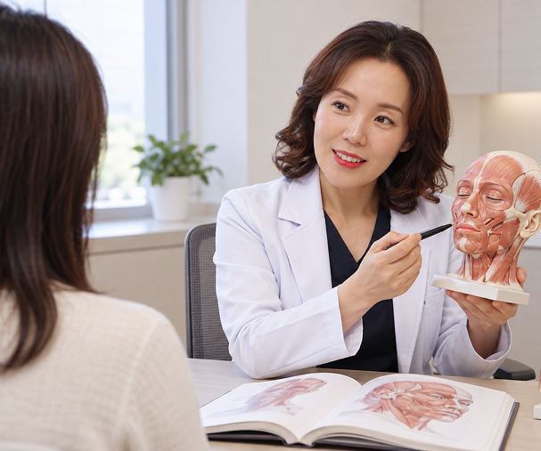
The First Clinic of Korean Medicine
같은 얼굴도 편안히 있을 때와 웃거나 말할 때의 모습은 다릅니다.
자연스러운 아름다움을 위해서는 일상에서 웃고 말하는 표정까지 고려해야 한다고 생각합니다.
제일한의원은 근육이 움직이는 방향과 범위, 피부와 주변 조직의 상태를 확인한 뒤 시술 부위와 자극의 정도를 정합니다.
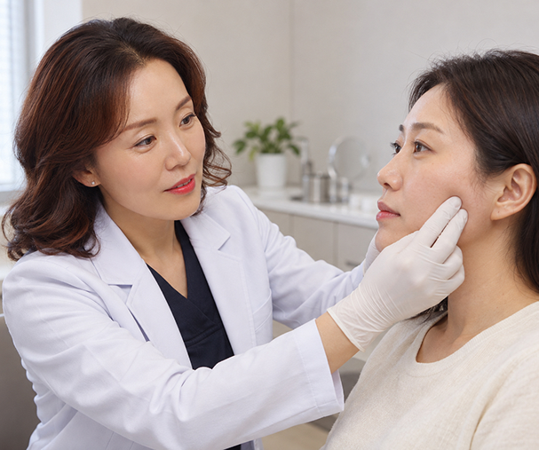
The First Clinic of Korean Medicine
녹는 실을 이용한 매선과 약침을 피부 상태와 치료 목적에 따라 적용합니다. 절개가 없는 시술에서도 중요한 것은 조직에 가해지는 자극의 위치와 깊이, 범위입니다.
제일한의원은 피부 두께와 조직의 상태를 고려해 적용 방법을 정하고, 시술 후 반응을 살피며 치료의 정도를 조절합니다.
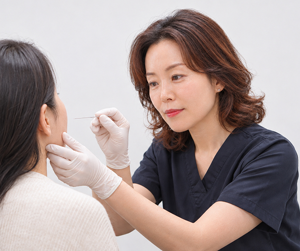
The First Clinic of Korean Medicine
피부 고민을 상담할 때 수면과 식사, 피로도도 함께 묻습니다.
어떤 생활 속에서 불편함이 반복되는지 이해하는 것도 진료의 한 부분이기 때문입니다.
겉은 매선으로 다듬고, 속은 1968년부터 이어 온 처방을 바탕으로 개인의 증상과 건강 상태를 살펴, 한약과 공진단으로 채웁니다.
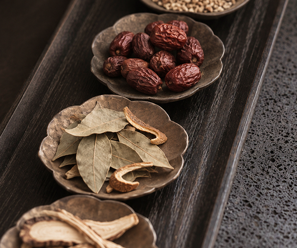
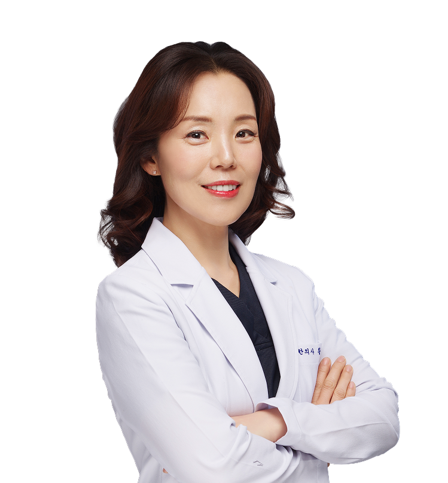
The First Clinic of Korean Medicine
제가 꿈꾸는 제일한의원은 한 번의 치료로 관계가 끝나는 곳이 아닙니다. 몸이 불편할 때도, 이전처럼 움직이지 못한다고 느낄 때도, 건강과 아름다움에 대해 새로운 고민이 생길 때도 다시 찾아올 수 있는 한의원입니다.
이근춘 원장님이 오랜 세월 한 자리에서 가족과 세대를 이어 환자를 만나오셨듯, 저 역시 환자 한 분의 삶을 오랫동안 살피는 한의사가 되고 싶습니다. 몸의 변화를 이해하고, 가능한 치료와 한계를 충분히 설명하며, 환자가 자신의 몸에 대해 더 잘 알게 하는 진료를 지향합니다.
오래 건강하게 산다는 것은 단지 병이 없다는 뜻이 아닙니다. 내 발로 걷고, 원하는 일을 할 수 있으며, 잘 먹고 잘 자고 편안하게 일상을 누리는 것. 그리고 나이가 들어도 자신다운 표정과 생기를 지켜가는 것이라 생각합니다.
제일한의원은 통증과 움직임, 몸의 기능, 자연스러운 아름다움을 따로 떼어 보지 않습니다. 환자가 지금의 일상을 지키고 앞으로의 삶을 준비하도록, 오래 믿고 상의할 수 있는 주치의가 되겠습니다.
대표원장 황지영
The First Clinic of Korean Medicine
고민하는 부위가 같아도, 필요한 치료는 다를 수 있습니다.
각 시술의 특성과 원하는 변화의 범위를 고려해 적합한 방법과 조합을 제안합니다.
The First Clinic of Korean Medicine
제일한의원은 피부 아래의 구조부터 표정의 움직임까지, 얼굴을 이루는 작은 차이를 세밀하게 읽습니다.
정교한 이해를 바탕으로, 본래의 표정과 분위기가 살아 있는 아름다움을 설계합니다.
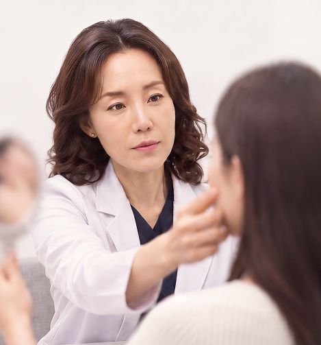
피부 상태와 표정에 따른 근육의 움직임을 살펴 개인의 고민에 맞는 치료 방향을 정합니다.
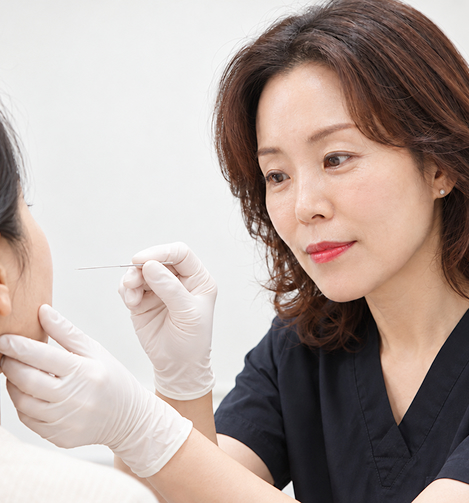
개인의 피부와 근육 상태에 맞춰 시술 부위와 자극의 정도를 조절하며 치료합니다.
시술 후 피부 반응과 회복 상태를 확인하고, 일상에서 필요한 관리 방법을 안내합니다.
The First Clinic of Korean Medicine
제일한의원은 통증 치료에서 근육을 다뤄 온 경험을 바탕으로, 얼굴의 움직임과 좌우 균형,
피부 상태와 고민을 세밀히 살핀 뒤 매선·정안침·스킨부스터 등의 시술을 개별적으로 계획합니다.
가는 침으로 얼굴의 피부와 근육에 자극을 주는 치료로, 잔주름과 탄력 저하 등 고민 부위의 상태와 표정근의 움직임을 살펴 시술 위치와 자극의 정도를 조절합니다. 제일한의원은 본래의 표정을 고려하며 자연스러운 변화를 추구합니다.
한약재 등에서 추출·정제한 성분으로 조제한 약침액을 필요한 부위에 주입하는 치료로, 피부 고민과 해당 부위의 조직 상태를 살펴 적용 여부를 판단합니다. 사용하는 약침의 성분과 특성, 개인의 반응을 고려해 치료를 계획합니다.
끝이 미세한 칼날 형태인 침을 이용해 유착되거나 단단해진 연부조직에 접근하는 치료입니다. 미용 진료에서는 고민 부위의 피부와 그 아래 조직 상태를 확인하고, 유착에 대한 치료가 필요한 경우 적용을 고려합니다. 얼굴의 해부학적 구조에 맞춰 시술 범위와 깊이를 신중하게 정합니다.
손으로 근육과 관절의 상태를 확인하고 자극을 조절하는 수기치료이며, 얼굴의 균형이 고민될 때 턱의 움직임과 목의 자세, 주변 근육의 긴장을 함께 살핍니다. 평가 결과에 따라 긴장 완화와 움직임 개선을 목표로 미용치료에 병행할 수 있습니다.
The First Clinic of Korean Medicine
세밀한 관찰부터 충분한 설명, 치료 후의 일상까지.
제일한의원이 진료의 과정마다 지켜가는 일곱 가지 기준입니다.
몸의 움직임을 다루는 통증 진료 경험을 안면 표정근과 근막을 이해하는 미용 진료로 확장합니다. 제일한의원 미용의 가장 중요한 차별점입니다.
매선·약침으로 겉을 다듬고, 오랜 처방의 한약과 공진단으로 몸 안에서부터 관리합니다. 이는 한의원이기에 가능한 미용입니다.
Since 1968. 이근춘 원장님의 맥진과 한약 임상을 배우고 이어가면서 현재의 진료에 맞게 발전시킵니다.
환자가 자신의 증상, 치료의 목표와 한계를 이해하도록 움직임·근육·신경의 관점에서 풀어 설명합니다.
근육과 근막의 긴장 및 움직임을 살피고 침·도침·추나 등에서 치료 부위와 방법을 개별적으로 결정합니다.
생활체육지도사 자격을 갖춘 대표원장이 재활운동과 생활 속 관리 방법을 안내합니다.
동일한 시술을 일률적으로 적용하지 않고, 적응증·금기·시술 후 주의사항까지 설명합니다.
The First Clinic of Korean Medicine
어떤 도구를 쓰는지만큼, 어디에 어떻게 적용하는지도 중요합니다.
제일한의원은 치료 부위와 조직의 상태를 살펴 필요한 도구와 적용 방법을 정합니다.
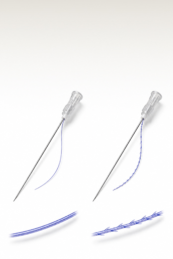
체내에서 흡수되는 실을 이용한 시술입니다. 모노매선은 피부 탄력 관리를, 돌기가 있는 코그매선은 처진 조직의 지지를 목적으로 적용합니다.
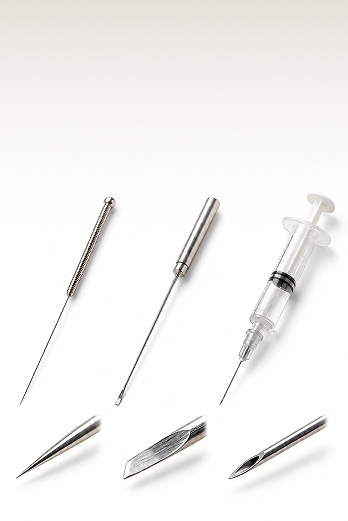
일반침은 경혈을 자극하고, 도침은 유착된 연부조직에 접근합니다. 전침은 침에 전기 자극을 더하고, 약침은 약액을 주입하는 방식으로 치료합니다.
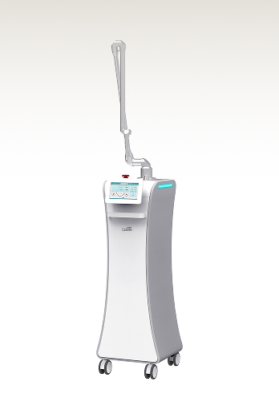
레이저의 열에너지로 점·사마귀 등 피부 병변을 제거하는 데 사용합니다. 병변의 특성을 확인해 시술 범위를 정하고, 이후의 피부 관리법을 안내합니다.
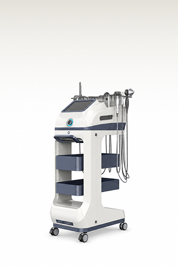
피부에 부착한 전극을 통해 전기 자극을 전달하는 물리치료 장비입니다. 통증 완화를 목적으로 사용하며, 치료 부위와 자극에 대한 반응에 맞춰 강도를 조절합니다.
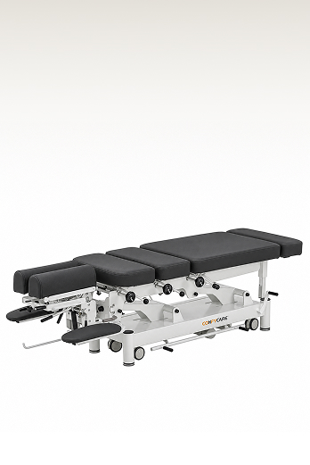
추나 등 수기치료에서 몸을 지지하고 치료 자세를 잡는 데 사용하는 치료대입니다. 치료 부위에 맞는 자세에서 근육과 관절에 수기 자극을 적용하도록 돕습니다.
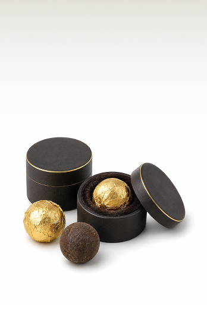
피로와 기력 저하 등 몸의 상태를 살펴 처방하는 환약입니다. 수면·소화 상태와 복용 중인 약을 함께 확인해 복용 여부와 방법을 안내합니다.
The First Clinic of Korean Medicine
편안한 마음으로 상담하고 치료받을 수 있도록,
제일한의원이 준비한 공간을 소개합니다.
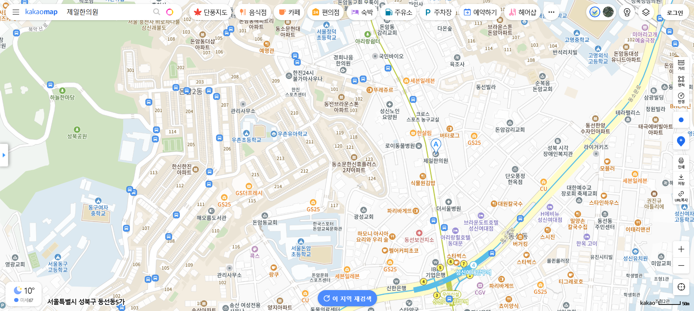